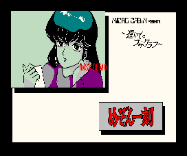

Maison Ikkoku (MSX)

This seems to be a RPG game similar to the Urusei Yatsura game for
the Gameboy except with no fighting. I haven't played it much and don't
really know what the goal of the game is.
Return to Emulator Table of Contents
Last Modified 11 March 1997
Created 11 March 1997
Luis A. Cruz
cruzl@ccs.neu.edu